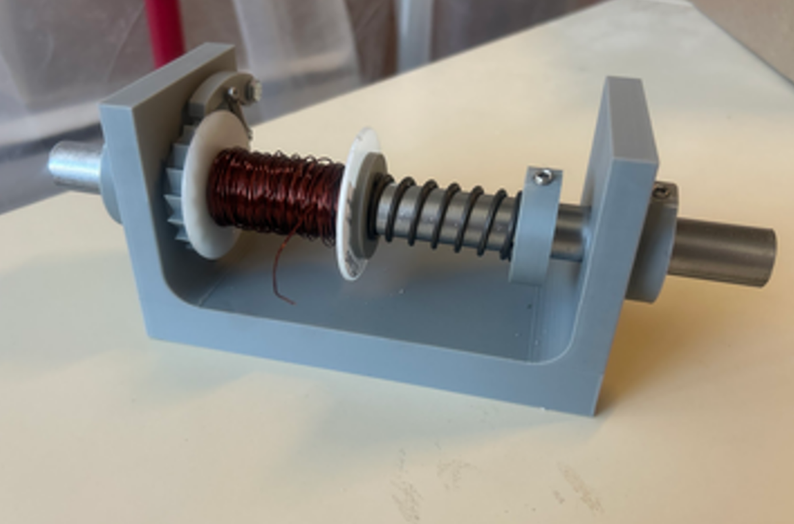
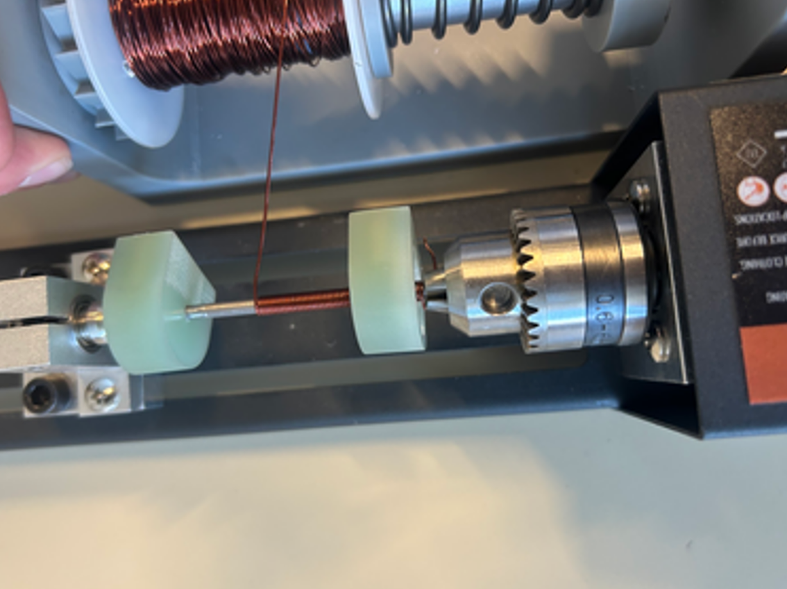
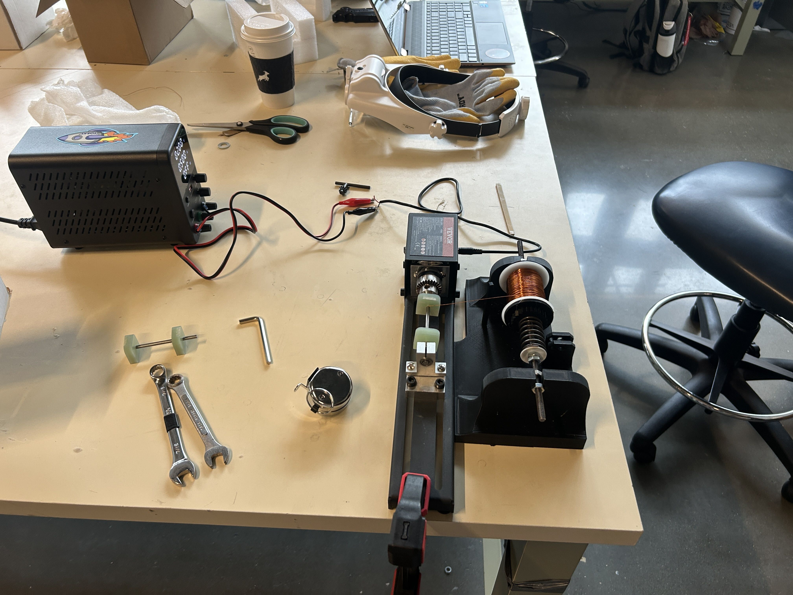
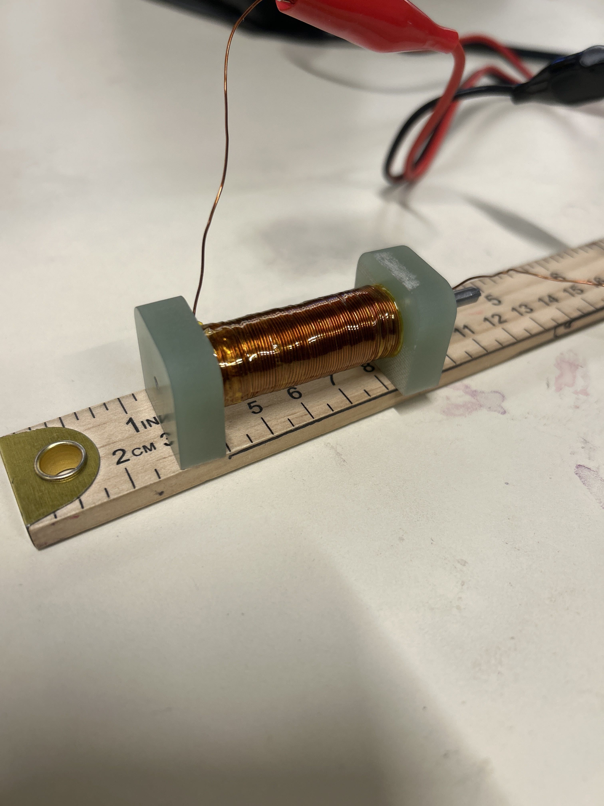

SCALAR Payload Responsible Engineer, 2025-2026
WashU Satellite Club
In December 2025 I was put in charge of the payload submodule
for the WashU Satellite Club's first CubeSat mission, SCALAR.
SCALAR's mission was to first, put WashU Satellite into space
for the first time. Second, it was to test homemade magnetorquers
in space and evaluate them as an independent ADCS solution (no reaction wheels).
I was made responsible engineer for the payload module, which included
two magnetorquer rods which I would design, manufacture, and test, as well
as a magnetorquer embedded into a PCB, which I oversaw the development of
but was designed by electrical team members.
Magnetorquer design began with the creation of a MATLAB sizing tool
which created a table of all possible magnetorquer designs that satisfied
given constraints. The tool would select wire gauges, then try to add
additional layers of wire until the constraints were broken. I used a
formula from a research paper to determine the expected magnetic dipole
of the magnetorquers. Link to Github Repo

This screenshot shows the output of the tool as a plot, which shows
the resulting magnetic moment as a function of wire radius for each
wire gauge. This made it very easy to see which wire gauges and designs
would be applicable for SCALAR.
Once a design was selected, the next challenge was manufacture. This was
solved by the creation of a wire tensioner, which I designed and 3D printed.
The wire tensioner design was based off of what fishers use as a DIY system for
spooling fishing line, using friction from a spring to apply tension to wire as
it is let out. Sufficient tension is required in order to create uniform wraps, and
uniformity has a large impact on the uniformity of the generated magnetic field and
therefore the quality of the system as a whole. The core of the magnetorquers, 98% pure
iron, 4mm in diameter, was mounted to a mini-lathe (which was procured for $40 from Home Depot)
along with endcaps that were designed and manufactured my John Babineau in his shop, made from
FR-4. Below is the first prototype being used for wrapping our first torquer!


Lots of improvements were needed in the tensioner. Using a unthreaded rod meant slipping, the pawl got in the way, the spring didn't apply enough tension, and we didn't get more than 2 wraps before we had to call it a day. Below is the CAD of the final tensioner.

Pictures of the wiring setup for the flight rods.

One of the final flight rods!

The performance of the rod was tested using a Georgia
Tech method outlined in their paper on magnetorquer design
and manufacture, using the built in magnetometer on my phone.
This magnetorquer shown produced 1.0942 A*m^2 at an applied
current of 0.6 A.
For me, the greatest part of this project has been seeing it
through from beginning to end over the course of the span of a year.
There were a lot of times early on I thought we might never be able
to get a decent magnetorquer, but through applying good engineering
practicies of prototyping and iteration, we made it and then some.
SOMETHING I MADE IS GOING TO SPACE!